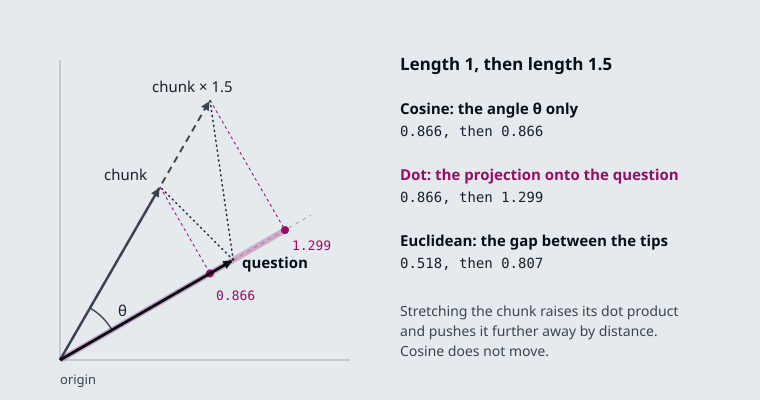

The running example is the Larkspur Cloud handbook from M11 to M13, cut into the chunks the M11 lab uses, and the same three golden questions: How long does a refund take?, Can I export my data after I cancel my plan? and What happens if my server goes down? The lab adds one chunk that answers none of them: plans-overview, the long pricing page kept as a single chunk.
TL;DR
- Check the norm before you choose a metric. OpenAI returns unit-length vectors, and for those cosine, dot product and Euclidean distance rank identically. sentence-transformers does not normalize by default; there, dot product favours longer vectors. In the lab, stretching one off-topic chunk to 1.15× its length is enough for dot product to rank it above the refund answer.
- Dimensions are a cost paid on every query.
text-embedding-3-smallreturns 1536 numbers,-large3072. At four bytes each, a million chunks take 6.1 GB at 1536 and 12.3 GB at 3072 before any index overhead. Thedimensionsparameter shortens the vector; measure what that costs on your own questions. - Cache embeddings, and namespace the cache by model and dimensions.
CacheBackedEmbeddingskeys each vector bynamespace + sha256(text). Re-embedding the 12 handbook chunks after one edit sends 1 text to the model instead of 12. Without a namespace, a model swap silently returns the old model’s vectors. - Domain fit is measured on your own golden set, not read off a leaderboard. The same model must embed documents and queries; a mismatch raises no error and returns noise.
Mental model
- A chunk from M13 arrives, here
refund-timing. - The cache looks it up by model, dimensions and text. A hit skips the model entirely.
- On a miss, the embedding model returns the vector: 1536 numbers for
text-embedding-3-small. - The vector is stored with the model name and dimensions that made it.
- A customer asks How long does a refund take?
- The question is embedded by the same model with the same dimensions.
- Its vector is compared with every stored vector by cosine similarity.
- The k closest chunks go to the prompt.
A chunk becomes a vector once, at index time, and the cache makes sure it stays once. A question becomes a vector on every request, and it has to come from the same model with the same dimensions as the stored vectors; otherwise the scores compare two unrelated coordinate systems. Recording the model name and dimensions beside the vectors is how a query service can check that before it searches.
Cosine similarity
Lesson 14.1: Embedding fundamentals, similarity metrics and model selection. Notebooks: 01a_embeddings_and_model_selection.ipynb
Retrieval needs one number per chunk that says how close it is to the question. Three formulas are in common use, and every vector store offers at least one of them:
cosine(q, d) = q · d / (‖q‖ ‖d‖) the angle only; from −1 to 1, higher is closer
dot(q, d) = q · d angle and length; higher is closer
euclidean(q, d) = ‖q − d‖ the straight-line gap; lower is closer

Cosine measures direction only, so a vector’s length cannot change it. The dot product is cosine multiplied by both lengths, so a longer vector scores higher at the same angle. Euclidean distance measures the gap between the two tips, so a longer vector moves away. The figure shows one pair: stretching the chunk to 1.5× leaves its cosine at 0.866, raises its dot product from 0.866 to 1.299, and pushes its distance from 0.518 to 0.807.
When both vectors have length 1, the three agree. The dot product equals the cosine, and Euclidean distance is √(2 − 2·cos), which falls as cosine rises, so all three return the same chunks in the same order. Notebook 14.1 checks this on two real text-embedding-3-small vectors, and it is why the first thing to print about a new model is the norm of one of its vectors:
| Model output | Norm | Which metric |
|---|---|---|
OpenAI text-embedding-3-* |
1.0, give or take float rounding | Any of the three; pick the one your store computes fastest, usually dot product |
sentence-transformers through HuggingFaceEmbeddings, default settings |
not 1 | Cosine, or pass encode_kwargs={"normalize_embeddings": True} and then any of the three |
The interactive lab draws ten Larkspur handbook chunks as 2D vectors so the angles are visible. The vectors are hand-placed, and every score is computed; the lab’s cosine, dot and Euclidean values match scikit-learn’s cosine_similarity and euclidean_distances to within 2e-15 at all 156 settings. Every chunk has length 1 except plans-overview, the long pricing page, whose length the slider sets, the way notebook 14.1 scales one vector by 3.0 to imitate a model that does not normalize:
plans-overview length |
How long does a refund take? | Can I export my data after I cancel? | What happens if my server goes down? |
|---|---|---|---|
| 1.0× | All three rank refund-timing first |
All three rank retention first |
All three rank sla first |
| 1.2× | Dot product ranks plans-overview first |
Dot product moves it from #4 to #3 | No change |
| 1.5× | Dot: plans-overview first; Euclidean: #4 |
Dot: plans-overview first; Euclidean: #5 |
Euclidean moves it to last |
| 3.0× | Dot: first; Euclidean: last of 10 | Dot: first; Euclidean: last of 10 | Dot and Euclidean both rank it last |
- A small length difference reorders close scores. For the refund question, dot product prefers the pricing page from 1.15× onward. Its cosine with the question is 0.866 against
refund-timing’s 0.998, and that gap is all the stretch has to overcome. - Cosine never moves. In every row, cosine ranks the evidence first and
plans-overviewthird or worse. Normalizing every vector first gives the same result for all three metrics. - Length cannot rescue a wrong direction. For the outage question
plans-overviewpoints away (cosine −0.122), so a longer vector only makes its dot product more negative.
Two cautions. Cosine scores are not probabilities, and their range differs between models, so a threshold such as “answer only above 0.7” (notebook 14.2’s optional tutorial gives bands like this) has to be re-measured after a model change. And embeddings encode topic more than truth: notebook 14.1 warns that a sentence and its negation embed close together, so “the plan is refundable” and “the plan is not refundable” can retrieve each other. Negation, numeric comparison and exact identifiers such as invoice numbers are weak spots, which is what hybrid search in M17 is for.
The same model on both sides
The model that embeds the chunks must also embed the questions, with the same dimensions setting. Breaking this rule raises no error. Notebook 14.1 indexes with text-embedding-3-small, queries with text-embedding-3-large truncated to 1536 dimensions, and gets vectors of the same shape on both sides; the search runs and returns scores from two unrelated coordinate systems.
flowchart LR
D["Chunks embedded by<br/>3-small, 1536 dims"] --> ST[("Index")]
Q["Question embedded by<br/>3-large, 1536 dims"] --> S{"Search runs:<br/>same shape"}
ST --> S
S --> R["Top-1 scores near zero<br/>no error, no warning"]
The tell is the score itself: if the best match for a question that plainly has an answer in the corpus scores near zero, suspect a mismatch before you touch chunking or prompts. It happens three ways in practice:
- Config drift. The indexing job and the query service read the model name from different places, and only one gets updated.
- An unnamespaced cache. The cache returns the old model’s vectors for the new model’s requests (Embedding cache, lesson 14.4).
- A provider-side update. A pinned model name is not always pinned weights.
The defence is cheap: write the model name and dimensions into the index metadata when you build it, and have the query service compare them with its own configuration before it serves a request.
The other notebook topics, embed_query against embed_documents and caching, are on the lesson 14.4 page; dimensions and the dimensions parameter are on the lesson 14.2 page.
Key Takeaways
- Print the norm of one vector from any new model. With unit-length vectors, cosine, dot product and Euclidean distance rank chunks identically; otherwise use cosine or normalise first.
- Cosine scores are not probabilities, and embeddings capture topic more than truth. Negation, numeric comparison and exact identifiers are weak spots.
- Embed chunks and questions with the same model and
dimensions. A mismatch raises no error; record both in the index metadata and check them before serving.
Check yourself
1. Why do cosine, dot product and Euclidean distance rank chunks identically when every vector has length 1?
With unit vectors the dot product equals the cosine, and Euclidean distance is √(2 − 2·cos), which falls as cosine rises. All three then return the same chunks in the same order. That is why the first thing to print about a new model is the norm of one of its vectors.
2. In the lab, the plans-overview vector is stretched to 1.5 times its length. Which chunk does dot product rank first for the refund-timing question, and what does cosine do?
Dot product ranks plans-overview first; it overtakes from 1.15× onward, because its cosine of 0.866 is not far below refund-timing’s 0.998. Cosine never moves and keeps refund-timing first. Normalising every vector makes all three metrics agree with cosine.
3. After a config change, the top match for an answerable question scores near zero, and no error is raised. What do you suspect first, and what prevents it?
A model mismatch: chunks and questions embedded by different models, such as text-embedding-3-small and text-embedding-3-large truncated to 1536, give vectors of the same shape from unrelated coordinate systems. Write the model name and dimensions into the index metadata when you build it. Have the query service compare them with its own configuration before it serves a request.
Vector dimensionality
Lesson 14.2: Hosted embeddings: OpenAI models and dimensions. Notebooks: 02a_openai_embeddings.ipynb, 02b_openai_embeddings_tutorial.ipynb (optional)
An embedding’s dimensionality is how many numbers the model returns per text. It is fixed by the model (or by the dimensions parameter, below), and every stored vector and every query vector in one index must have the same count. The notebooks use three hosted OpenAI models:
| Model | Default dimensions | Max input tokens | Listed price per 1M tokens | 1,000 chunks of 500 characters |
|---|---|---|---|---|
text-embedding-3-small |
1536 | 8191 | $0.02 | $0.0025 |
text-embedding-3-large |
3072 | 8191 | $0.13 | $0.016 |
text-embedding-ada-002 (previous generation) |
1536 | 8191 | $0.10 | $0.0125 |
Dimensions, token limits and prices are as the lesson 14.2 notebooks list them; check the provider’s current price list before you budget. The last column is arithmetic: 500 characters is about 125 tokens at four characters per token, the rule of thumb the M11 lab uses, so 1,000 such chunks are about 125,000 tokens.
Embedding the corpus is a one-off bill and small. The dimensions are paid again on every query, for as long as the index exists: the store keeps every number, holds them in memory to search fast, and multiplies through them for each similarity. Stored as 32-bit floats, before any index overhead or compression:
| Dimensions | Bytes per vector | 1 million chunks |
|---|---|---|
384 (all-MiniLM-L6-v2, lesson 14.3) |
1,536 | 1.5 GB |
1024 (BAAI/bge-large-en, lesson 14.3) |
4,096 | 4.1 GB |
1536 (3-small) |
6,144 | 6.1 GB |
3072 (3-large) |
12,288 | 12.3 GB |
Notebook 14.1 puts it as a rule: a 3072-dimension index is twice the size of a 1536-dimension one and costs roughly twice as much per search. Some vector stores can compress vectors into fewer bytes per number, which lowers these figures at some cost in accuracy.
Shortening a vector with dimensions
The text-embedding-3 models are trained with Matryoshka representation learning, which puts the most useful information in the first numbers. The API can therefore cut a vector short and re-normalize it, and the shorter vector still works for search:
OpenAIEmbeddings(model="text-embedding-3-small", dimensions=512) # 512 numbers instead of 1536
OpenAIEmbeddings(model="text-embedding-3-large", dimensions=1536) # large model, small model's index size
flowchart LR
T[/Chunk text/] --> M["text-embedding-3-large"]
M --> F["3072 numbers<br/>most information first"]
F --> C["Keep the first 1536<br/>re-normalize to length 1"]
C --> V[("Index sized like 3-small")]
Shorter vectors are worse; the question is how much worse on your data for what you save. Notebook 14.1 measures it on six labelled queries at 1536, 512, 256, 128, 64 and 32 dimensions and reports two numbers per setting:
- recall@1, which saturates on an easy set: six well-separated documents score perfectly at almost any size, and then the metric says nothing more.
- margin, the correct document’s similarity minus the best wrong document’s. It keeps shrinking as dimensions fall, and a shrinking margin is where recall will break on a large corpus with near-duplicates, such as Larkspur’s
refund-windowandrefund-timingchunks.
The notebook’s most useful row is 3-large truncated to 1536: a stronger model at the same index cost as 3-small. Run the same comparison on the M11 golden set before you pick a size, and treat the choice as permanent, because changing dimensions means re-embedding every chunk and querying with the new setting.
Key Takeaways
- Embedding the corpus is a small one-off bill; dimensions are paid on every query in memory and compute. One million 1536-dimension vectors take about 6.1 GB as 32-bit floats.
- The
text-embedding-3models can be shortened withdimensions.3-largeat 1536 gives a stronger model at the same index cost as3-small. - Judge a dimension cut by the margin, not only recall@1, which saturates on easy sets. Treat the choice as permanent, because changing it means re-embedding every chunk.
Check yourself
1. Embedding the corpus is a small one-off bill. Why do the dimensions keep costing you for as long as the index exists?
The store keeps every number of every vector, holds them in memory to search fast, and multiplies through them for each similarity. A 3072-dimension index is twice the size of a 1536-dimension one and costs roughly twice as much per search.
2. How much memory do one million chunks need at 3072 dimensions compared with 1536, stored as 32-bit floats?
12,288 bytes per vector gives 12.3 GB at 3072 dimensions, against 6,144 bytes and 6.1 GB at 1536, before any index overhead or compression. Truncating text-embedding-3-large to 1536 with dimensions gives a stronger model at the smaller index’s size.
3. A dimension sweep on six labelled queries shows perfect recall at 1 even at 64 dimensions. Should you ship 64?
No. Recall@1 saturates on an easy set of well-separated documents and then says nothing more. The margin keeps shrinking as dimensions fall, and a shrinking margin is where recall breaks on a large corpus with near-duplicates such as refund-window and refund-timing. Run the comparison on the M11 golden set, and treat the choice as permanent, since changing it means re-embedding every chunk.
Domain fit
Lesson 14.3: Open-source embeddings with Hugging Face. Notebooks: 03a_huggingface_embeddings.ipynb, 03b_huggingface_embeddings_tutorial.ipynb (optional), 03c_embedding_models.ipynb (optional)
A model fits a domain when texts that mean the same thing in your documents land close together and texts that differ land apart. General-purpose models are trained on broad web text. They can place two Larkspur chunks that differ by one condition (a full refund within 30 days, a prorated one after) almost on top of each other, miss that a customer’s “bandwidth” is the handbook’s “outbound traffic”, or fail on a language they were not trained on. None of this raises an error; it shows up as the wrong chunk ranked first.
HuggingFaceEmbeddings runs sentence-transformers models on your own machine, with no API key, which widens the choice. The models the lesson’s notebooks load:
| Model | Dimensions | What the notebooks say it is for |
|---|---|---|
sentence-transformers/all-MiniLM-L6-v2 |
384 | Fast, general purpose; the default in the notebooks |
sentence-transformers/all-MiniLM-L12-v2 |
384 | A little better than L6, a little slower |
sentence-transformers/all-mpnet-base-v2 |
768 | Higher quality, slower than MiniLM |
sentence-transformers/multi-qa-MiniLM-L6-cos-v1 |
384 | Tuned for question answering and semantic search |
sentence-transformers/paraphrase-multilingual-MiniLM-L12-v2 |
384 | More than 50 languages |
BAAI/bge-large-en |
1024 | High-accuracy applications; the slowest in 03b’s table |
mixedbread-ai/mxbai-embed-large-v1 |
not printed in the notebook | Loaded in 03c as a second open model to compare with OpenAI |
Two settings decide whether a local model behaves like the hosted ones in lessons 14.1 and 14.2:
- Normalization is off by default. Pass
encode_kwargs={"normalize_embeddings": True}, or score with cosine. Otherwise dot product rewards longer vectors, as the lesson 14.1 lab shows. - Some models are asymmetric. They are trained so that short questions and long passages meet, and they treat the two sides differently, so
embed_queryandembed_documentscan return different vectors for the same text. Keep the two calls separate in your code even when today’s model is symmetric.
Hosted or self-hosted is part of the fit, because some corpora may not leave your network. The trade, from notebook 14.1:
| Hosted API | Self-hosted | |
|---|---|---|
| Cost | Per token, for as long as you use it | Hardware and operations |
| Data | Leaves your network | Stays on your machines |
| Latency | A network round trip | Local compute; a GPU helps a lot |
| Ops burden | None | Versioning, serving, scaling, capacity |
| Deprecation | The provider can retire the model, forcing a re-index | You decide when it changes |
Measuring fit
Leaderboards such as MTEB average many public datasets; they are good for a shortlist. The decision comes from scoring the shortlist on your own documents and questions. A short decision chain:
flowchart TD
A{"May the documents<br/>leave your network?"} -- no --> L["Shortlist open models<br/>from the table above"]
A -- yes --> B{"Questions in more<br/>than one language?"}
B -- yes --> ML["Shortlist multilingual models<br/>test each language"]
B -- no --> H["Shortlist hosted and<br/>open models"]
Every shortlist then goes through the same scoring on the golden set: recall@k, margin, cost and latency. A useful golden set for Larkspur holds the M11 questions plus hard negatives: chunks on the same topic that do not answer the question, such as cancel for Can I export my data after I cancel my plan? Notebook 14.1’s exercise asks for exactly this, because a six-document toy set separates no models.
Score more than one thing. The optional lesson 14.5 notebook, 05a_compare_embedding_models_databricks.ipynb, indexes eight short documents with three open models in Databricks Vector Search and grades the top-5 results for 15 queries with MLflow’s RetrievalRelevance and RetrievalGroundedness scorers. Its recorded result:
| Model | Retrieval relevance | Retrieval groundedness |
|---|---|---|
all-MiniLM-L6-v2 |
0.36 (tied best) | 0.8 |
thenlper/gte-large |
0.36 (tied best) | 0.8 |
BAAI/bge-large-en-v1.5 |
below 0.36 (value not given) | 0.8667 (best) |
The smallest model tied for best relevance, and the ranking reversed on the second metric. Read the second column with care: the notebook’s rag_app returns the retrieved text itself as the response, so groundedness here grades retrieved text, not an LLM’s answer. Eight documents and 15 queries cannot settle a model choice; they show the method. Run it on the full golden set, and decide which metric your product needs before you look at the results.
Key Takeaways
- Poor domain fit raises no error; it shows up as the wrong chunk ranked first. Use leaderboards for a shortlist and your own golden set, with hard negatives, for the decision.
HuggingFaceEmbeddingsdoes not normalise by default. Passnormalize_embeddings=Trueor score with cosine, and keepembed_queryandembed_documentsseparate for asymmetric models.- Hosted models cost per token and send data off your network; self-hosted ones cost hardware and operations. Decide which metric matters before you compare results.
Check yourself
1. How does a poor domain fit show up, given that it raises no error?
As the wrong chunk ranked first. A general-purpose model can place two Larkspur chunks that differ by one condition almost on top of each other, or miss that a customer’s “bandwidth” is the handbook’s “outbound traffic”. Leaderboards such as MTEB give a shortlist; the decision comes from scoring that shortlist on your own documents and questions.
2. You are building a golden set for the question about exporting data after cancelling a plan. What kind of chunk should it include besides the answer, and why?
A hard negative: a chunk on the same topic that does not answer the question, such as cancel. Hard negatives are what separate models; a six-document toy set separates none.
3. You swap a hosted OpenAI model for all-MiniLM-L6-v2 with default settings and keep scoring by dot product. What goes wrong?
Normalisation is off by default in HuggingFaceEmbeddings, so the vectors do not have length 1 and dot product rewards longer vectors. Pass encode_kwargs={"normalize_embeddings": True} or score with cosine.
Embedding cache
Lesson 14.4: Production concerns: batching, caching and similarity behaviour. Notebooks: 04a_embeddings_deep_dive.ipynb
Every re-run of an indexing notebook, and every re-ingest after a change elsewhere in the pipeline, embeds the whole corpus again and pays for it again, for vectors identical to the ones you already had. CacheBackedEmbeddings wraps any embedding model with a key-value store: text it has seen comes back from the store, and only new text reaches the model.
from langchain_classic.embeddings import CacheBackedEmbeddings # LangChain 1.x; 0.x: langchain.embeddings
from langchain_classic.storage import LocalFileStore # 0.x: langchain.storage
cached = CacheBackedEmbeddings.from_bytes_store(
underlying_embeddings=OpenAIEmbeddings(model="text-embedding-3-small"),
document_embedding_cache=LocalFileStore("./.embedding_cache/"),
namespace="text-embedding-3-small:1536:", # model and dimensions
key_encoder="sha256", # the default, sha1, warns
)
- A chunk arrives for the first time.
- Its key is the namespace, here the model and dimensions, followed by a sha256 hash of the text.
- The store has no such key.
- The embedding model is called, and the call is billed.
- The vector is written under the key and returned. The first run over the 12 handbook chunks sends all 12 to the model.
- The same text arrives again, from a re-run or an unchanged chunk.
- The same text gives the same key, so the vector comes back from the store. The second run sends 0 of 12.
The key is the namespace followed by a hash of the text, so a cache entry matches only the exact text under the exact namespace. To see what that means for the Larkspur handbook, the 12 chunks of the M11 lab were run through the real CacheBackedEmbeddings with a counting stand-in for the API (LangChain’s DeterministicFakeEmbedding, so the counts are exact and free):
| Run | Texts sent to the model | Keys in the store |
|---|---|---|
| 1. Index the 12 chunks | 12 of 12 | 12 |
| 2. Index the same 12 again | 0 of 12, identical vectors | 12 |
| 3. Edit one chunk (“100 GB” to “200 GB”), index again | 1 of 12 | 13 |
| 4. A second model under its own namespace | 12 of 12 | 25 |
| 5. A second model, both with no namespace | 0 of 12: every vector is the first model’s | 12, shared by both |
- Re-indexing after an edit costs the edit. When M13’s chunking changes only some chunks, only those are embedded again; chunks whose text is unchanged hit the cache.
- Old entries stay. Run 3 leaves the pre-edit vector in the store. A file store grows until you clear it, so give it a home you can delete or expire.
- The namespace is part of correctness.
from_bytes_storedefaults to an empty namespace. Run 5 swaps the model and gets the old model’s vectors back with no error, an index mixing two vector spaces, which is the mismatch from lesson 14.1. Put the model name and itsdimensionssetting in the namespace.
Only documents are cached by default (query_embedding_cache=False), which suits most traffic, since few queries repeat word for word. LocalFileStore writes one file per vector; for a cache shared between workers, any other ByteStore, such as Redis, works the same way. Notebook 14.4 uses a TemporaryDirectory, so its cache is discarded when the cell ends.
Batching
embed_documents(texts) sends many texts in one request; embed_query(text) sends one. Looping embed_query over a corpus pays one network round trip per chunk, and on a real corpus that is the difference between minutes and hours. Use embed_documents for the index and embed_query for questions.
Notebook 14.1 runs both paths on the same six texts and compares the vectors. They are semantically identical (cosine about 1.0) but not bit-identical, because a batched request and a single request take different paths through the server. The difference is numerical noise, so never use exact equality to decide whether two vectors came from the same text; that is the cache’s job. For an asymmetric model the two methods differ on purpose, which is one more reason to keep the two calls separate (lesson 14.3).
Key Takeaways
CacheBackedEmbeddingskeys each vector on namespace plus a hash of the text, so re-indexing after an edit pays only for the changed chunks. Old entries stay until you clear them.- Put the model name and
dimensionsin the cache namespace. The default empty namespace silently returns the old model’s vectors after a model swap. - Embed the corpus with batched
embed_documents, not a loop ofembed_query. The two paths differ by numerical noise, so never compare vectors for exact equality.
Check yourself
1. Why should an indexing job call embed documents on a batch instead of looping embed query, and why not compare the two outputs for exact equality?
embed_documents sends many texts in one request, while looping embed_query pays one network round trip per chunk, the difference between minutes and hours on a real corpus. The two paths return vectors that are semantically identical (cosine about 1.0) but not bit-identical, because they take different paths through the server. Never use exact equality to decide whether two vectors came from the same text; that is the cache’s job.
2. You edit one of the 12 Larkspur chunks from 100 GB to 200 GB and re-index through the cache. How many texts reach the model, and how many keys are stored?
One of 12 texts reaches the model, and the store holds 13 keys. The edited text hashes to a new key, and the pre-edit vector stays in the store, which grows until you clear it.
3. After you swap embedding models, re-indexing sends zero texts to the model and retrieval quality collapses. What is wrong?
Both models share the default empty namespace of from_bytes_store, so the cache returns the first model’s vectors for the second model’s requests. The index now mixes two vector spaces, with no error. Put the model name and its dimensions setting in the namespace.
Interactive lab
Cosine, dot and Euclidean: open the file in a browser. With How long does a refund take? selected, move the length of plans-overview from 1.0× to 1.2×: dot product now ranks the pricing page first while cosine still ranks refund-timing first. Push it to 3.0×, the scaling notebook 14.1 uses, and Euclidean distance drops the same chunk to last place. Then press Normalize first and watch the three rankings agree again.
How it connects
- Before: M13 decides what text each vector stands for; a chunk that mixes topics gets a vector that averages them. M11 gives the golden questions and the baseline any model choice is measured against.
- Next: M15 stores these vectors and runs the nearest-neighbour search; its distance setting must match the metric chosen here. M16 changes what gets embedded (summaries, parents, contextual headers), and M17 adds keyword search for the identifiers and negations embeddings handle badly.
Interview Spotlight: 5 Questions You Might Get Asked
Production questions in the style of OpenAI, Anthropic and Google interviews for applied AI roles.
1. Larkspur’s support assistant was fine on Friday. On Monday every answer is vague, and the logged top-1 similarity for golden questions has fallen from its usual range to near zero. Nobody touched the prompt. What do you check first?
What a strong answer covers:
- Suspects a model mismatch before a quality problem: scores collapsing toward zero on questions that clearly have answers is the signature
- Compares the model name and dimensions the query service uses with the ones recorded in the index metadata; matching dimensions prove nothing, since
3-largetruncated to 1536 has the same shape as3-small - Checks the usual causes: config read from two places, an unnamespaced embedding cache, a provider-side model update
- Adds a startup check that refuses to serve when the query model differs from the index model, and keeps the golden-set run in the deploy pipeline
2. The handbook must stay in the EU, and the team proposes replacing text-embedding-3-small with self-hosted all-MiniLM-L6-v2. What do you need to know before you agree?
What a strong answer covers:
- Data residency may decide it, but the quality cost still has to be measured: 384 dimensions against 1536, on the M11 golden set plus hard negatives such as the two refund chunks
- Checks normalization: sentence-transformers does not normalize by default, so either pass
normalize_embeddings=Trueor make sure the store uses cosine - Counts the operational cost: serving, scaling, GPU or CPU capacity, model versioning, in exchange for no per-token bill and no provider deprecations
- Plans the migration as a full re-index into a new collection, with a new cache namespace, switched over only after the golden set passes
3. Storage for the vector index is the biggest line on the bill. Someone suggests dimensions=256. How do you decide?
What a strong answer covers:
- Computes the saving first: 256 against 1536 dimensions is one sixth of the raw vector storage and similarity work
- Measures recall@k and the margin between the correct chunk and the best wrong one at each candidate size; recall saturates on easy sets while the margin keeps shrinking
- Tries
3-largetruncated to the same size as an alternative: a stronger model at the same index cost - Remembers that truncation is a re-index, so it is decided once on real traffic samples, not tuned weekly
4. A new embedding model goes live. How would you notice in production, within a day, that it retrieves worse than the old one?
What a strong answer covers:
- Keeps the old index serving in shadow and logs both top-k lists for a sample of real queries
- Tracks the top-1 score distribution and the share of queries under a score floor, recalibrated for the new model because score ranges differ between models
- Runs the golden set and an LLM-judged sample of live traffic on both, comparing recall and answer faithfulness
- Watches slices separately: other languages, product names and numeric questions can regress while the average improves
5. The vector store is configured for dot product, and the embedding model is a sentence-transformers model loaded with default settings. Retrieval keeps returning the longest pages in the handbook. Explain the bug and the fix.
What a strong answer covers:
- Without normalization, vector length varies, and dot product scores length as well as direction; cosine scores direction only
- Confirms it by printing the norms of the stored vectors, which a normalized model keeps at 1.0
- Fixes it by normalizing at embedding time (
encode_kwargs={"normalize_embeddings": True}) or by switching the store to cosine, then re-indexes - Adds a test that asserts unit norms on a sample of stored vectors, so a config change cannot bring the bug back
Key Takeaways
- Print a vector’s norm before you choose a metric. With unit vectors, use whichever metric your store computes fastest; without them, use cosine or normalize first.
- Dimensions cost storage and search time on every query. Shrink them only after measuring the margin on your own golden set.
- Wrap the embedder in
CacheBackedEmbeddingswith a namespace that names the model and its dimensions, so re-runs and small edits cost almost nothing. - Choose a model on your own documents and questions, use the same model on both sides, and record it in the index metadata so a mismatch fails loudly.